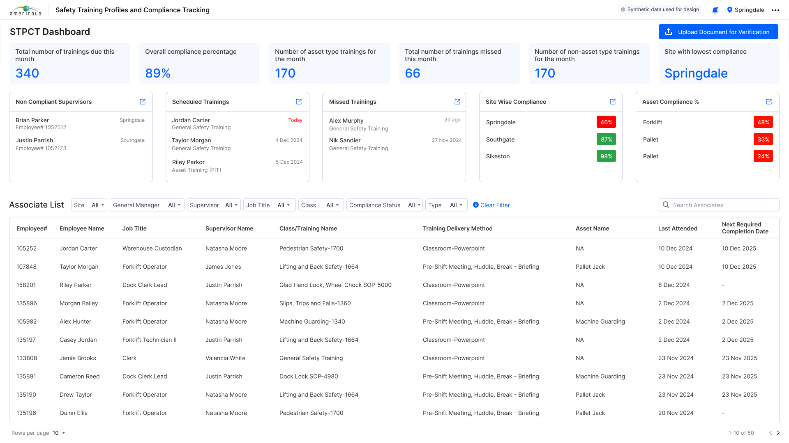
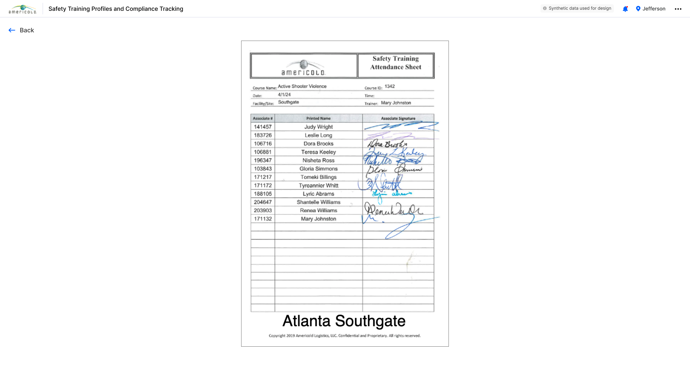
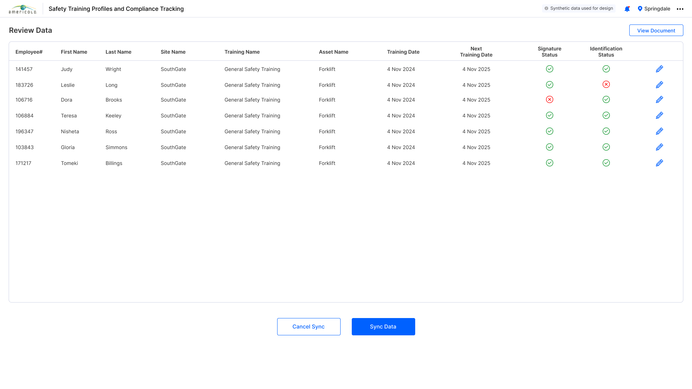
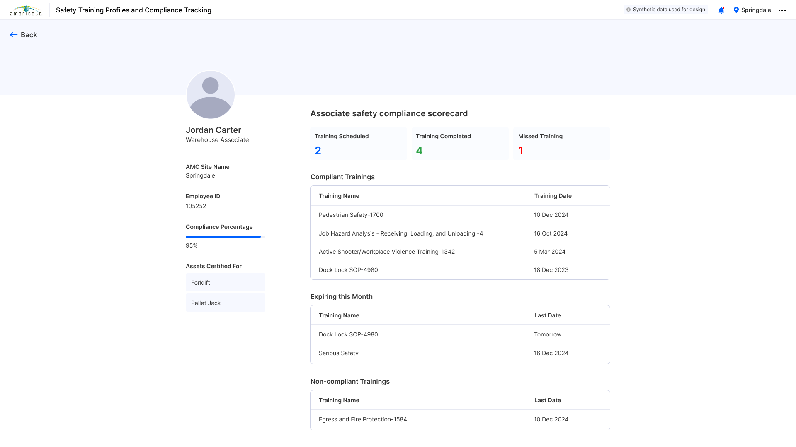
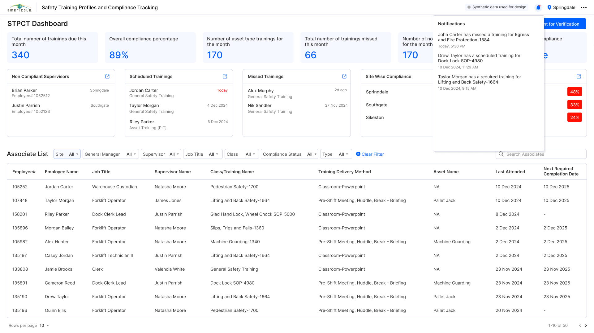
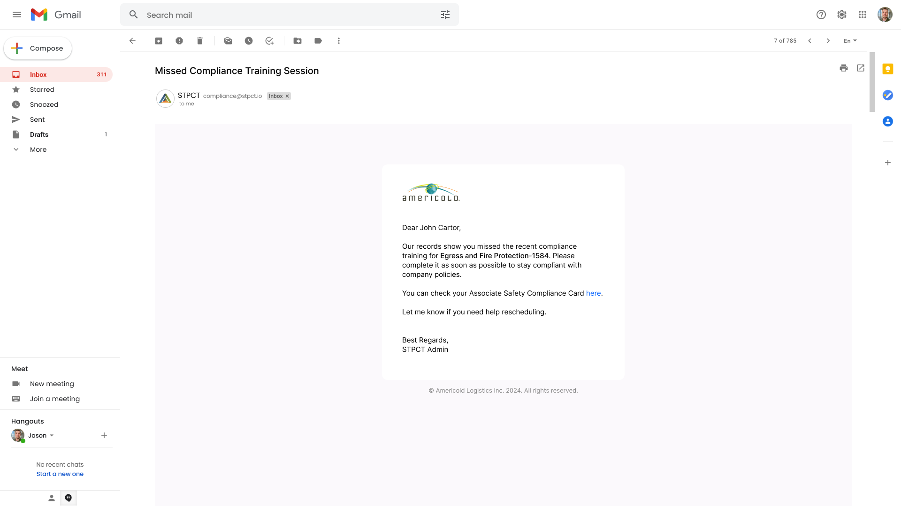
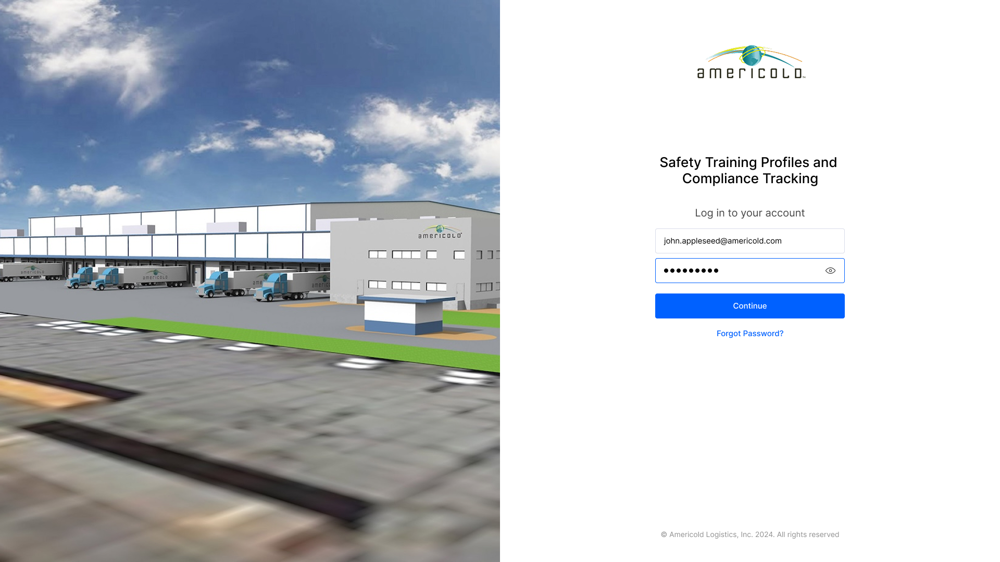
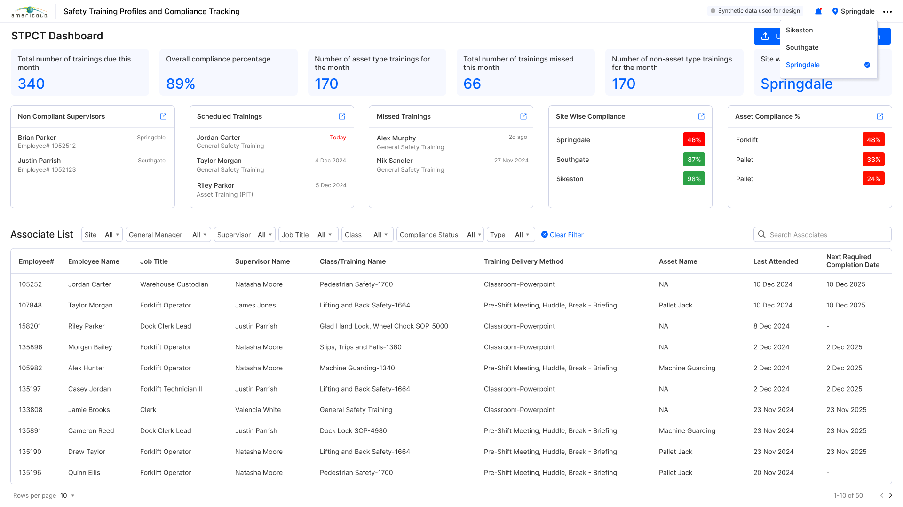
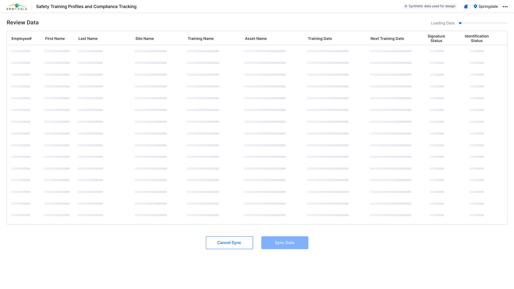
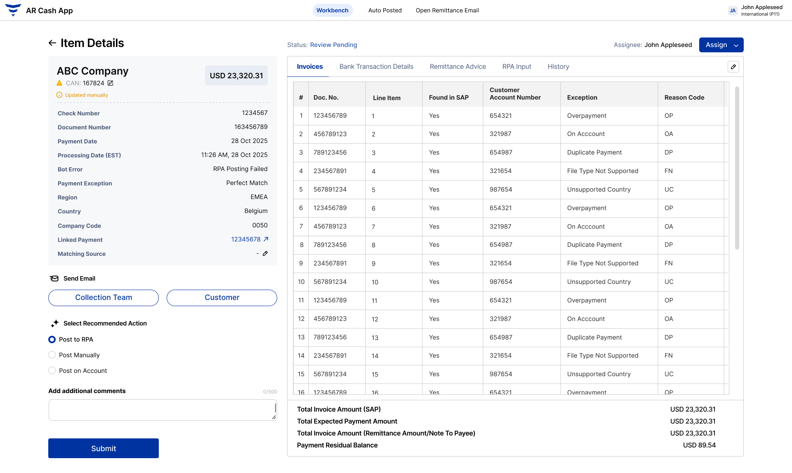

Americold has to keep thousands of warehouse associates current on required safety training across dozens of cold-storage sites - training that was logged on paper sign-in sheets and never reached a system. STPCT digitises those sheets, verifies each associate's signature and identity, and rolls compliance up by site, asset and supervisor - with associate scorecards, alerts and automated reminders.

01 / Requirement
Safety training is a legal requirement in a warehouse full of forklifts and machinery. But the records lived on paper sign-in sheets in binders at every site.
"We knew training happened. We just couldn't prove who was current until an auditor asked - and by then it was too late to fix."- EHS stakeholder, Americold
Every safety class - forklift, pedestrian safety, machine guarding, lifting - ended with a paper attendance sheet of printed names and wet signatures. Those sheets never made it into a system, so no one could answer the only question that matters: who is not compliant, and where?
The brief: turn the paper into a live, site-wide compliance view - ingest the sheets, verify them, and surface every lapse before it becomes an audit finding or an incident.
Upload a scanned attendance sheet and pull every associate, class and date off it - no manual re-keying.
One dashboard that reads compliance by site, asset and supervisor - and flags the sites and people that are behind.
Alerts and automated emails that reach an associate before a required training expires, not after.
02 / Research
I worked with EHS and site managers to trace how training gets recorded today - and where the trail breaks.
Every class ends with a signed attendance sheet - the only proof training happened.
Compliance had to read by site, by asset type and by supervisor at once.
A synced row is only trusted when signature and identity both check out.
The trail broke at the sheet. Training was real, but the record was ink on paper - impossible to search, report on, or trust at scale. And even once digitised, a name on a sheet isn't proof until the signature and identity are verified against the associate.
So the product is built around ingestion and trust: read the sheet, verify each row, then let the dashboard and the reminders do their work.
Digitising the attendance sheet is the whole game - everything downstream depends on it.
Managers think in sites and assets, not individuals - the dashboard leads with the aggregate.
Signature and identity checks turn a scanned name into a record you can stand behind in an audit.
The cheapest fix is reaching an associate before a certification expires - so nudges are first-class.
03 / User Flow
Two loops: an admin turns a scanned sheet into verified records, and the platform watches compliance and nudges the people who are behind.
Ingest - sheet to verified record
Each extracted row is only synced once its signature and identity both check out.
Monitor - watch & nudge
Compliance rolls up automatically; anyone falling behind is reminded before it lapses.
04 / Product Tour
From a scanned sheet verified row by row, to a compliance dashboard, to the reminder that lands in an associate's inbox.
The heart of the product: read a scanned attendance sheet, verify every associate, and sync it into the record.

Training ends with a signed attendance sheet - printed names, associate numbers, wet signatures. STPCT takes a photo or scan of exactly that and keeps it on the record as the source of truth behind every synced row.

The extracted rows come back as a review table - associate, class, dates - with a signature status and an identity status on each. Green passes, red needs a look; an admin edits any row, then syncs the whole sheet into the records.
Once records are live, compliance rolls up - and drills down to a single associate's scorecard.
The dashboard leads with the numbers that matter - trainings due, overall compliance, the site with the lowest score - over cards for non-compliant supervisors, scheduled and missed trainings, and site- and asset-level compliance, above the full associate list.

Each associate opens into a safety-compliance scorecard: their compliance percentage, the assets they're certified for, and trainings split into compliant, expiring this month, and non-compliant.
The alerts and reminders that turn a missed training into a completed one.

A notification feed surfaces the moments that matter - a missed training, an upcoming scheduled session, a required training coming due - so supervisors and admins act while it's still cheap to fix.

When a training is missed, a branded reminder goes straight to the associate - naming the exact class, linking to their compliance card, and offering to help reschedule.
Entry, the associate-list filters, the site switcher, and the sync in progress.



05 / Delivery
STPCT went live as the place EHS and site managers keep the floor trained - and prove it.
Signed sheets ingested, verified and searchable instead of filed in a binder.
Compliance by site, asset and supervisor, refreshed as records sync.
Alerts and emails reach associates ahead of an expiring certification.
Handoff covered the document-sync ingestion and its signature/identity verification, the compliance dashboard and its site and asset rollups, the associate scorecard, the notification feed and the automated reminder emails - all under one site-aware shell.
The through-line: get the paper into the system, verify it, and let the dashboard and reminders make compliance visible and self-correcting.
"I can pull up any site and see exactly who's behind - and the system already emailed them."- Site manager, Americold
Screens use synthetic data marked in-product for design. Names, quotes and figures are illustrative of the project's goals.
A cash-application workbench where RPA bots auto-match incoming payments to SAP invoices.
